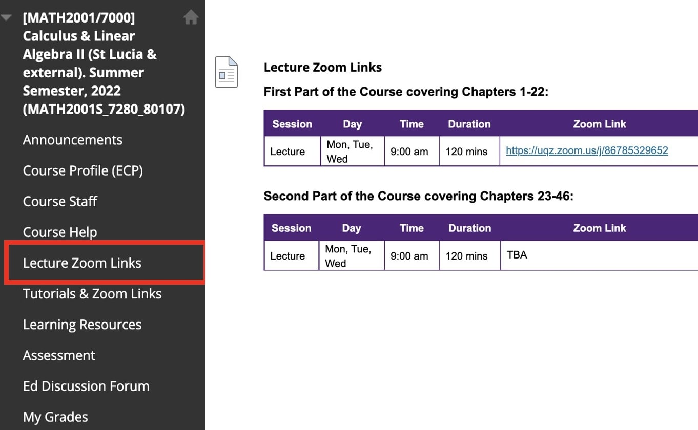
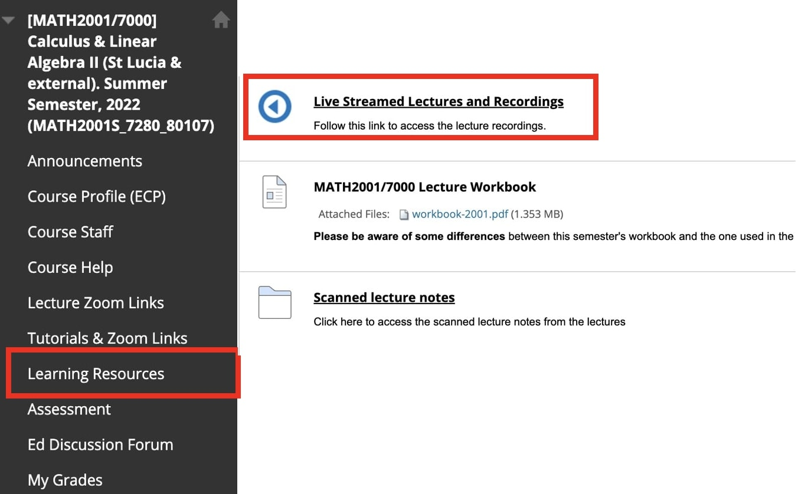
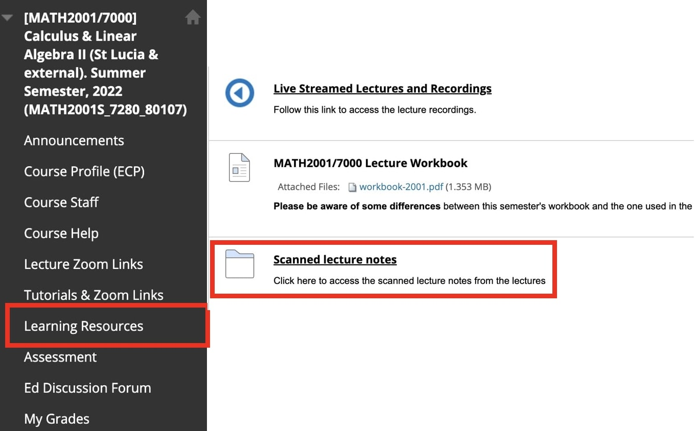
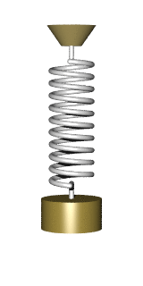
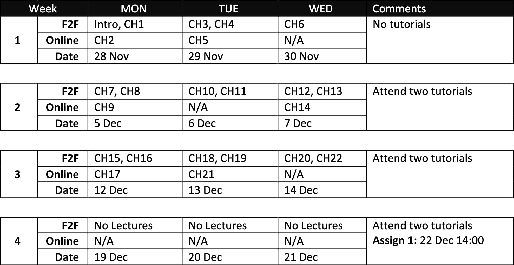

Calculus &
Linear Algebra II
Introduction
Welcome to MATH2001/7000
Welcome to MATH2001/7000
Lecturers
-
1st half (Workbook chapters 1-22):
Juan Carlos Ponce Campuzano - j.ponce@uq.edu.au -
2nd half (Workbook chapters 23-46):
Ian Marquette
Course Coordinator
Ian Marquette - i.marquette@uq.edu.au
MATH2001/7000 - Workbook
Workbook
Please ensure you have a copy of the workbook, available from either UQ print on Level 2, Building 2 (Duhig Tower) or Blackboard course webpage.
Recommended texts
- Calculus, 6th or 7th ed. or higher, James Stewart. Brooks/Cole, (2012).
- Advanced Engineering Mathematics, 9th ed., Erwin Kreyszig. John Wiley, (2006).
- Elementary Linear Algebra, 11th ed., Howard Anton. John Wiley, (2014).
MATH2001/7000 - Live & Pre-recorded Lectures
This semester, you may work through the content covered in the Lecture Workbook in one of the following two possible ways as outlined in Section 4.2 of the ECP: i.e., either
- Attend 3 live on-campus lectures during the scheduled times and watch 1 additional "online-only" pre-recorded lecture per week,
- or Watch all the pre-recorded lecture content each week in your own time.
MATH2001/7000 - Live & Pre-recorded Lectures
- Attend 3 live on-campus lectures during the scheduled times and watch 1 additional "online-only" pre-recorded lecture per week,
|
Lectures will be conducted on campus, live-streamed
via Zoom to external students. |

|
MATH2001/7000 - Live & Pre-recorded Lectures
- Attend 3 live on-campus lectures during the scheduled times and watch 1 additional "online-only" pre-recorded lecture per week,
|
Recordings of all on-campus lectures can be found in Blackboard under "Learning Resources". |

|
MATH2001/7000 - Live & Pre-recorded Lectures
- Attend 3 live on-campus lectures during the scheduled times and watch 1 additional "online-only" pre-recorded lecture per week,
|
The complete workbook notes will be posted to the Blackboard after a lecture. |

|
MATH2001/7000 - Live & Pre-recorded Lectures
- or Watch all the pre-recorded lecture content each week in your own time.
|
All the pre-recorded lectures are available in the weekly folders in Blackboard under "Learning Resources". |

|
MATH2001/7000 - Tutorials & Consultations
Tutorials
- Internal students: On campus
- External students: Via Zoom
Tutor information and zoom links can be found in Blackboard under the "Tutorial & Zoom Links" tab.
Consultation hour Weeks 1-4
- In person: On Tuesdays, 11:30 am - 12:30 pm, 67-741 Priestley Building
- On Zoom: Wednesdays, 11:30 am - 12:30 pm
MATH2001/7000 - Ed Discussion Forum
MATH2001/7000 - Assessment
Assessment for both MATH2001 & MATH7000
- Assignments 1, 2, and 3.
- Online Exam.
Plagiarism
All work submitted must be your own, although you are welcome and encourage to discuss assignments in groups.
MATH2001/7000 - Rough outline
- Chapters 1-6: Ordinary differential equations
|
Source: Falling |
\[ \frac{dV}{dt}+ \frac{k}{m}V = g \] |
MATH2001/7000 - Rough outline
- Chapters 1-6: Ordinary differential equations
|

|
$\ds x'' + \frac{k}{m}x' =0$ More info: Simple harmonic motion |
MATH2001/7000 - Rough outline
-
Chapters 1-6: Ordinary differential equations

|
\[ \frac{d^2\theta(t) }{dt^2} = -\mu\frac{d\theta (t)}{dt}-\frac{g}{L}\sin \left(\theta(t)\right) \] |
MATH2001/7000 - Rough outline
-
Chapters 1-6: Ordinary differential equations
\[ \begin{eqnarray} \theta_1'' & = & \frac{-g\left(2m_1+m_2\right)\sin \theta_1 - m_2 g \sin\left(\theta_1 - 2 \theta_2\right) - 2\sin\left(\theta_1 - \theta_2\right)\,m_2 \big[\theta_2'^2 L_2 + \theta_1'^2L_1 \cos\left(\theta_1 - \theta_2\right)\big]}{L_1\big[2m_1+m_3-m_2\cos \left(2\theta_1 - 2 \theta_2\right) \big]}\\ \theta_2'' & = & \frac{ 2\sin\left(\theta_1 - \theta_2\right) \big[ \theta_1'^2L_1(m_1+m_2) + g (m_1+m_2) \cos \theta_1 + \theta_2'^2L_2m_2\cos\left(\theta_1 - \theta_2\right) \big]}{L_2\big[2m_1+m_3-m_2\cos \left(2\theta_1 - 2 \theta_2\right) \big]}\\ \end{eqnarray} \]
Source: www.myphysicslab.com
MATH2001/7000 - Rough outline
- Chapters 7-22: Linear algebra
|
|
\[ A = \left( \begin{array}{cccc} a_{11} & a_{12} & \cdots & a_{1n} \\ a_{21} & a_{22} & \cdots & a_{2n} \\ a_{31} & a_{32} & \cdots & a_{3n} \\ \vdots & \vdots & \ddots & \vdots\\ a_{m1} & a_{m2} &\cdots & a_{mn} \\ \end{array} \right) \quad \] |
MATH2001/7000 - Rough outline
- Chapters 7-22: Linear algebra
|
Source: Algorithm Archive |
\[ \left( \begin{array}{ccc} a_{11} & \cdots & a_{1n} \\ \vdots & \ddots & \vdots \\ a_{n1} & \cdots & a_{nn} \\ \end{array} \right) \left( \begin{array}{c} x_{1} \\ \vdots \\ x_{n} \\ \end{array} \right) = \left( \begin{array}{c} b_{1} \\ \vdots\\ b_{n} \\ \end{array} \right) \] \[ A \mathbf x = \mathbf b \] |
MATH2001/7000 - Rough outline
- Chapters 7-22: Linear algebra

Source: General rotations |
$$ {\begin{bmatrix}\cos \gamma &-\sin \gamma &0\\\sin \gamma &\cos \gamma &0\\0&0&1\\\end{bmatrix}}\qquad {\begin{bmatrix}\cos \beta &0&\sin \beta \\0&1&0\\-\sin \beta &0&\cos \beta \\\end{bmatrix}} $$ $${\begin{bmatrix}1&0&0\\0&\cos \alpha &-\sin \alpha \\0&\sin \alpha &\cos \alpha \\\end{bmatrix}}$$ |
MATH2001/7000 - Rough outline
- Chapters 23-33: Multivariate integral calculus
|
Source: Double integrals |
$$ \int_{a}^{b}\int_c^df(x,y)~dxdy $$ $$ \int_c^d\int_{a}^{b}f(x,y)~dydx $$ Computation of volumes. |
MATH2001/7000 - Rough outline
- Chapters 23-33: Multivariate integral calculus
|
|
Applications $$ m = \iiint_R \rho(x,y,z)~dV. $$ $$ \overline{x} = \frac{M_{yz}}{m}, \quad \overline{y} = \frac{M_{xz}}{m}, \quad\overline{z} = \frac{M_{xy}}{m} $$ First & Second moments. |
MATH2001/7000 - Rough outline
- Chapters 34-46: Vector calculus
|
|
$$ \r = (x,y,z) $$ $$ \F =F_1(\r)~\i+F_2(\r)~\j+F_3(\r)~\k $$ Vector fields. |
MATH2001/7000 - Rough outline
- Chapters 34-46: Vector calculus

|
$$ \int_C \F \cdot \T dS $$ $$ \int_a^b \F\left(\r\right)\cdot \r'(t)~dt $$ Line integrals over vector fields. |
MATH2001/7000 - Rough outline
- Chapters 1-6: Ordinary differential equations
- Chapters 7-22: Linear algebra
- Chapters 23-33: Multivariate integral calculus
- Chapters 34-46: Vector calculus
MATH2001/7000 - Outline Schedule Weeks 1-4
Credits
Design, Images & Applets
Juan Carlos Ponce Campuzano